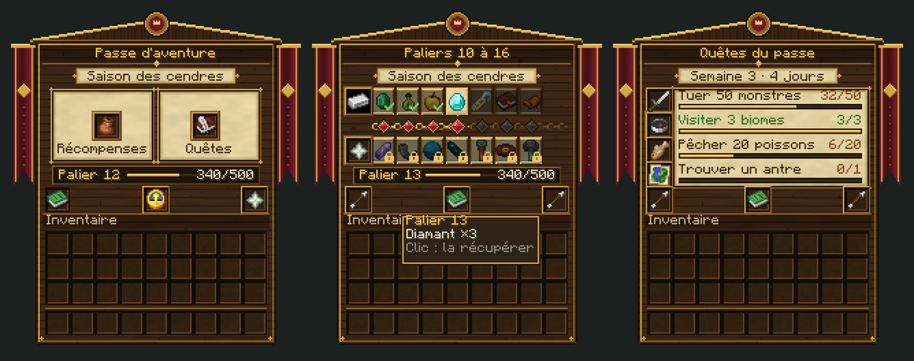

Mineur
Creuser, extraire, trouver les filons. Talents : fortune, solidité des pioches…
Progression
Un seul niveau, de 0 à 100, nourri par quatre métiers. Plus il monte, plus tu deviens fort, et plus le monde s'ouvre devant toi.
En préparation · les chiffres peuvent encore bouger01 · Métiers
Tout le monde pratique les quatre. Chaque métier monte en jouant, et ton niveau global est leur somme. Chaque niveau de métier donne aussi des points pour ses talents.
Creuser, extraire, trouver les filons. Talents : fortune, solidité des pioches…
Fabriquer, assembler, entretenir l'équipement. 3 à 5 talents à 3 niveaux.
Préparer les plats qui font tenir les héros. 3 à 5 talents à 3 niveaux.
Traquer les créatures et leurs seigneurs. 3 à 5 talents à 3 niveaux.
Exemple avec 25 niveaux par métier. Le maximum de chaque métier reste à fixer.
02 · Statistiques
Chaque niveau te donne des points à placer où tu veux. Guerrier increvable, chasseur rapide, aventurier chanceux : à toi de choisir.
Points restants : 10
03 · Zones
Le monde est découpé en anneaux de 500 blocs autour du centre. Dans chacun, les créatures ont l'un de 5 niveaux tirés au hasard. Au bout du monde, à 10 000 blocs, elles atteignent le niveau 100. Les boss suivent la même règle, avec un niveau plancher.
04 · Spécialités
Elles permettent de fabriquer ou d'acheter des consommables très puissants, à peu d'utilisations. Choisis-en deux :
Aucune spécialité choisie.
05 · Rangs et exploits
Ton rang monte avec ton niveau et tes exploits : boss vaincus, donjons, étages de la Tour. Il débloque les services de la capitale. Voici les blasons des rangs actuels ; la liste définitive en comptera 13.
La monnaie courante se gagne avec les métiers, les quêtes et les votes. La monnaie d'exploit ne s'obtient qu'au combat difficile : boss, donjons, Tour.
Chaque objet légendaire est lié à un métier. Seul le talent de raffinage de ce métier permet de le faire monter, jusqu'à 5 étoiles.
La puissance se gagne en jouant. La boutique ne vend que des cosmétiques, des titres et la piste premium du passe.
06 · Saisons
Chaque saison apporte ses quêtes et ses 100 paliers. La piste gratuite donne tout ce qui compte pour progresser ; la piste premium n'ajoute que des cosmétiques.
Rejoindre l'aventure